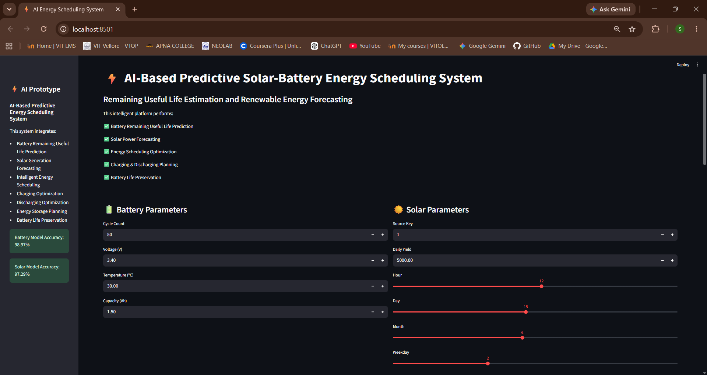
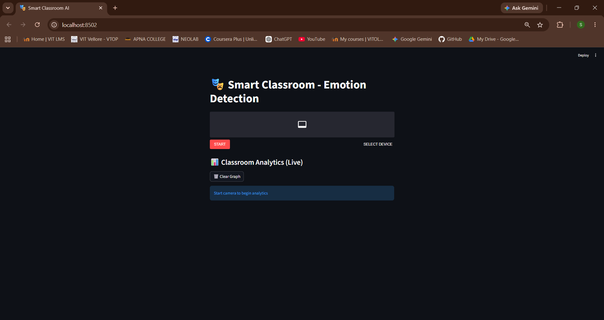
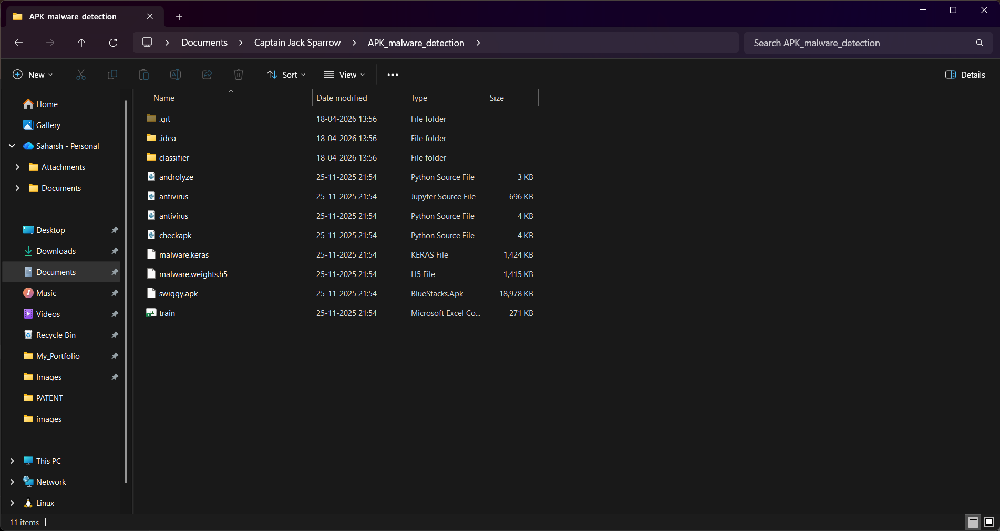
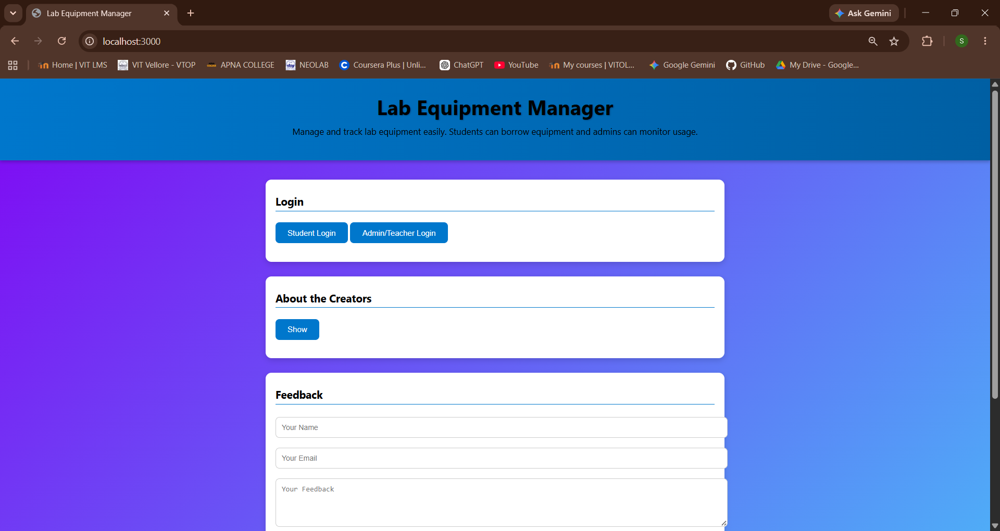
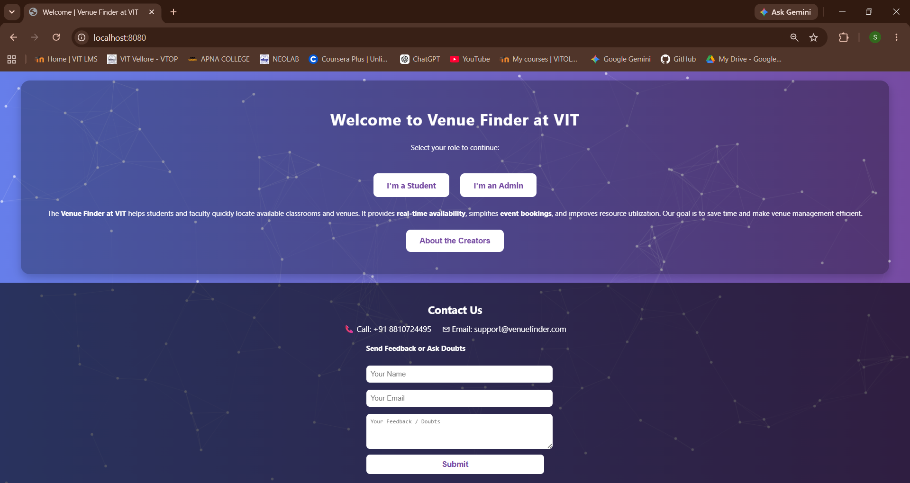
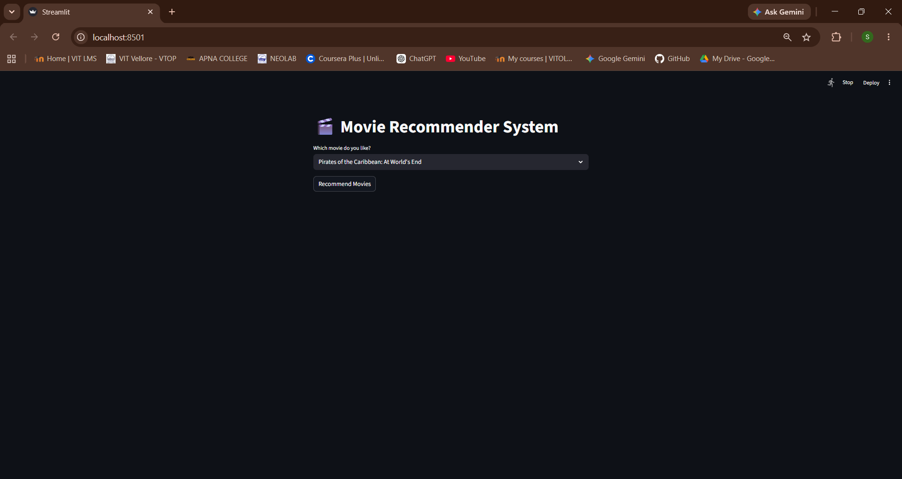

My Projects

AI-Based Energy Scheduling System
An intelligent energy management system that integrates solar power prediction and battery health forecasting to optimize energy usage and scheduling decisions.
Technologies Used
Python • Machine Learning • Pandas • NumPy • Streamlit
Online Book Store
The Online Book Store is a full-stack web application developed to provide users with a convenient platform for browsing and managing books online. The system includes separate customer and administrator interfaces, allowing users to explore available books while enabling administrators to manage platform operations efficiently.
Technologies Used
HTML • CSS • JavaScript • Node.js • Express.js • MongoDB • EJS • Git • GitHub

student Facial Expression Analysis
A Facial Expression Analysis System developed using Artificial Intelligence and Deep Learning techniques to automatically detect and classify human emotions from facial images. The system analyzes facial features and predicts expressions such as happiness, sadness, anger, surprise, fear, disgust, and neutrality. This project demonstrates the application of computer vision and deep learning for emotion recognition and human-computer interaction.
Technologies Used
Python • Deep Learning • TensorFlow • Keras • OpenCV • NumPy • Pandas • Computer Vision • CNN

APK Malware Detection
An APK Malware Detection System developed using Machine Learning techniques to identify and classify malicious Android applications. The system analyzes APK features, permissions, and behavioral patterns to distinguish between benign and malicious applications, helping improve mobile security and threat detection.
Technologies Used
Python • Machine and Deep Learning • Scikit-Learn • Pandas • NumPy • Feature Engineering • Data Analysis • Android APK Analysis

Lab equipment Management
A web-based Lab Equipment Management System developed to streamline the process of issuing, tracking, and returning laboratory equipment. The system provides separate interfaces for students and administrators, enabling efficient inventory management, equipment allocation, return tracking, and record maintenance across multiple laboratory departments.
Technologies Used
HTML • CSS • JavaScript • Node.js • Express.js • MySQL • EJS • SQL • Git • GitHub

VIT Venue Finder
VIT Venue Finder is a web-based application designed to help students and faculty quickly locate available classrooms, and academic venues within the VIT campus. The system provides real-time venue availability information, enabling users to efficiently find free spaces for classes, meetings, study sessions, and events while reducing time spent searching for vacant rooms.
Technologies Used
HTML • CSS • JavaScript • Node.js • Express.js • MySQL • EJS • Database Management • Git • GitHub

Movie Recommendation System
A Movie Recommendation System developed using Machine Learning techniques to provide personalized movie suggestions based on user preferences, ratings, and viewing patterns. The system analyzes movie data and user interactions to recommend relevant films, enhancing the overall user experience and content discovery process.
Technologies Used
Python • Machine Learning • Pandas • NumPy • Scikit-Learn • Data Analysis • Recommendation Algorithms